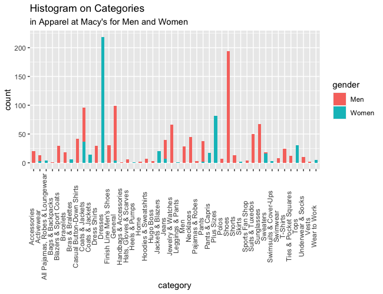
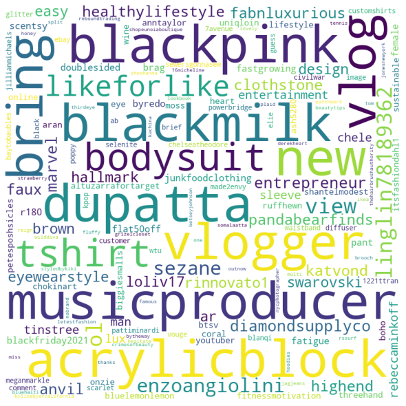

About me
Introduction
Data Gathering
Data
Code
Data Cleaning
Exploring Data
Naive Bayes
Naive Bayes in R
Naive Bayes in Python
Clustering
ARM and Networking
Decision Trees
SVM
Conclusions
Exploring Data
Exploring Data with R
Exploring Data with Python

View
This is the Ordered Bar chart of Average Ratings of Categories for Men.

View
This is the wordcloud of twitter data with the hashtag fashion.
For more visualizations and the code for these visualizations, click here. The html file is attached in the link.
View Code and Visualization